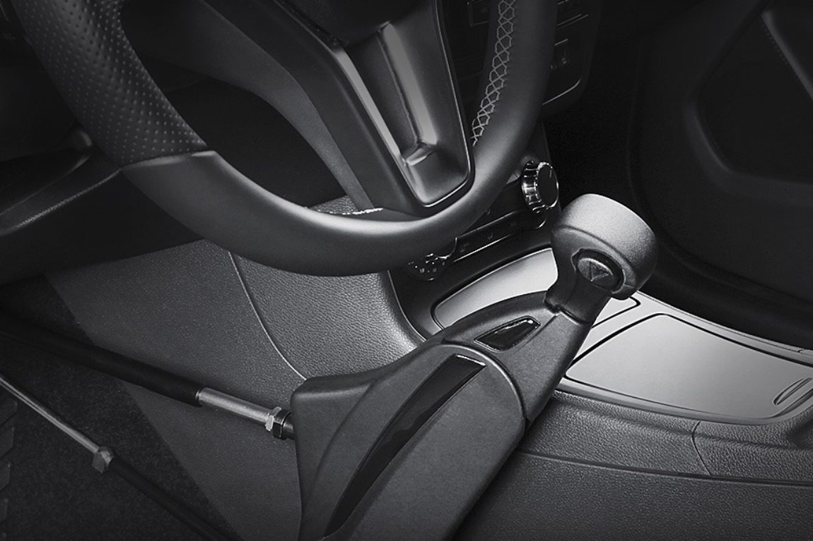

Combinatie gas geven/remmen
B&S kan verschillende auto aanpassingen maken met betrekking tot de combinatie gas geven/remmen. De auto aanpassingen die B&S kan maken om met een beperking te kunnen gas geven en remmen, zijn:
Push-Pull systeem
Een van de meest gebruikte oplossingen is het Push-Pull systeem, speciaal ontworpen voor auto’s met een automatische transmissie. Dit systeem vervangt het gas- en rempedaal door een eenvoudige hendel: door de hendel naar achteren te trekken (Pull) geeft u gas, en door de hendel naar voren te duwen (Push) remt u. Voor extra gebruiksgemak kunnen er extra functies worden toegevoegd, zoals een parkeerrem, richtingaanwijzer of ruitenwisserbediening. B&S biedt Push-Pull systemen van verschillende merken als Veigel en Carospeed. Deze systemen combineren functionaliteit met een stijlvol ontwerp, zodat ze goed aansluiten bij het interieur van uw auto.
Pedaalverhogers en parallelpedalen
Voor kleinere bestuurders kan de afstand tot de pedalen een probleem vormen. Als de afstand tussen voet en pedaal te groot is, bieden pedaalverhogers een eenvoudige oplossing. Deze opzetstukken zijn vaak makkelijk in te bouwen in uw auto en zorgen ervoor dat u de pedalen zonder moeite kunt bereiken. Is de afstand echter te groot voor een verhoger, dan biedt B&S parallelpedalen. Deze pedalen worden op de juiste hoogte geplaatst en mechanisch gekoppeld aan de originele pedalen. Vaak combineert B&S dit met een uitneembare verhoogde vloer om een perfecte rijpositie te creëren.
SpaceDrive® systeem
Het SpaceDrive® systeem is een baanbrekende oplossing voor bestuurders die zeer weinig kracht of beweging kunnen uitoefenen. Dit elektronische systeem, gebaseerd op de 'Drive by Wire' technologie, maakt het mogelijk om gas te geven, te remmen en te sturen met minimale fysieke inspanning. Volledige elektronische bekrachtiging zorgt ervoor dat het systeem zeer licht en nauwkeurig reageert. SpaceDrive® biedt daarmee maximale rijondersteuning voor mensen met een beperkte spierkracht of mobiliteit.
Andere gas- en remsystemen
Naast het Push-Pull en SpaceDrive® systeem biedt B&S diverse andere opties, zoals SmartGas en SmartBrake. Deze systemen maken gebruik van volledige elektronische bekrachtiging en kunnen worden bediend met een gas-/remschuif, gas-/remstick, gas-/remhevel of kantelpedaal. Dit geeft de bestuurder flexibiliteit om de best passende oplossing te kiezen, afhankelijk van zijn of haar specifieke situatie.
Welke aanpassing u nodig heeft met betrekking tot het kunnen gas geven en remmen met een beperking. B&S kan ervoor zorgen dat u zelf kan autorijden met de verschillende oplossingen die betrekking hebben tot het gas geven en het remmen.